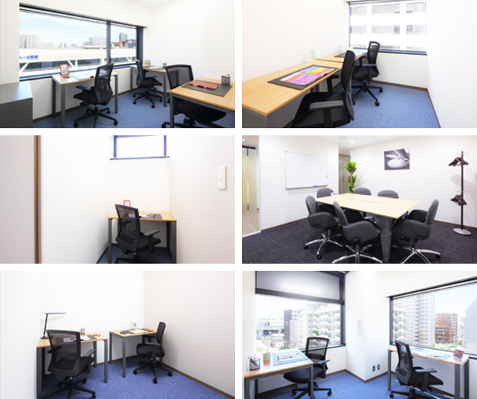

【個室レンタルオフィス】
オープンオフィス新大阪北
オープンオフィス新大阪北がNEW OPEN
大阪市淀川区「新大阪」エリア。「新大阪」駅は、東海道・山陽新幹線のターミナル駅・大阪の玄関口として、全国的に認知されております。
北側エリアには高層ビルが建ち並び、多くの企業がオフィスを構える大阪を代表するビジネス街の一つです。
全国展開をする企業にとって、このエリアは首都圏と西日本を結ぶ重要なアクセスポイントとなっており、支店や営業所としての需要が非常に高いビジネス街です。
オープンオフィス新大阪北が提供するオフィスサービス
-
 高速インターネット＜光ファイバー＞
高速インターネット＜光ファイバー＞
- 100Mbpsの光ファイバーによるブロードバンド環境をご用意しました。各部屋に配線済みですので、パソコンに繋げばすぐLAN経由で高速インターネットを利用出来ます。
-
 ネットワーク・カラーレーザープリンタ+スキャナー
ネットワーク・カラーレーザープリンタ+スキャナー
- ネットワークを利用して、各お部屋のパソコンから印刷できます。プリンタをご用意いただく必要もございません。
スキャナー機能も搭載しております。
-
 カラーレーザーコピー
カラーレーザーコピー
- フロア内にご用意してあります。カード方式でコピーが出来ますので、小銭の準備が不要です。
-
 ICカードキーによる入室管理
ICカードキーによる入室管理
- 専用ICカードを使ったホテル式のスマートシステムを用いて、セキュリティーを向上させています。
-
 ミーティングルーム（会議室）
ミーティングルーム（会議室）
- 商談・会議にご利用いただける共有スペースをご用意しています。インターネットで簡単に予約をしていただけます。
-
 無線LAN（WiFi）
無線LAN（WiFi）
- 共有スペースとミーティングスペースにて、無線LAN(WiFi)サービスをご利用いただけます。

オープンオフィス新大阪北の特徴

大阪の玄関口「新大阪」
支店、営業所に最適なロケーション
特徴的な外観と大通りに面す、視認性の高いオフィスビル
関西圏、大阪市内の主要ビジネス街へも好アクセス
24時間利用可能 あらゆるワークスタイルに対応
オフィス周辺のMap
オープンオフィス新大阪北近隣のスポット
- ■銀行
- 三井住友銀行 新大阪支店
三菱東京UFJ銀行 新大阪北支店
南都銀行 新大阪支店
池田泉州銀行 新大阪支店
京都銀行 新大阪支店店 - ■レストラン
- イタリアン＆バール アルバータ
チャイナテーブル 新大阪店
新大阪ワシントンホテルプラザ 銀座（会席）
鉄板焼き 一花一葉
カプニス（フレンチ） - ■ホテル
- レム 新大阪
ホテルウィングインターナショナル 新大阪
コートヤード・バイ・マリオット 新大阪ステーション
新大阪 ステーションホテルアネックス
新大阪 ワシントンホテルプラザ - ■レジャー
- コナミスポーツクラブ 新大阪
セントラルフィットネスクラブ 新大阪 - ■映画館
- ムラマツ リサイタルホール 新大阪
オープンオフィス新大阪北の住所・アクセス
- 住所:
- 大阪府大阪市淀川区西宮原1-8-24 新大阪第3ドイビル 6F
- 空港からのアクセス:
- 関西国際空港からJR特急はるか で「新大阪」駅まで約50分
関西国際空港からリムジンバスで大阪・梅田まで約50分。「新大阪」駅まで電車で10分、タクシーで10分
伊丹空港からリムジンバスで「新大阪」駅まで約25分 - 電車からのアクセス:
- 地下鉄御堂筋線線「新大阪」駅4番出口より徒歩7分
JR線「新大阪」駅北口より徒歩8分
東海道・山陽新幹線「新大阪」駅 中央改札口より北口経由で徒歩9分
JR「大分駅」から車で約5分 - お車でのアクセス:
- 新大阪駅西側、新大阪センイシティ3号館向かい
オープンオフィス新大阪北のフロアマップ
SOUTH

WEST

NORTH

※フロア内は禁煙です。
※こちらはイメージ図となりますので、状況が異なる場合は現況を優先させていただきます。
- ◆初回納入金
- 利用料1ヶ月分の保証金
- ◆共益費
- 水道光熱費、ビル共益費、ゴミ出し、フロア・トイレの清掃、共有部分の消耗品代を含みます。
リージャスグループの説明
リージャス・グループは、柔軟なワークスペースを提供する世界最大の企業です。そのネットワークは世界120カ国1,100都市、3300拠点に及びます。会員数は250万人で、業界で成功を収める大小様々な企業や起業家の方々にご利用いただいています。
リージャスは、個室タイプのレンタルオフィス、コワーキングスペースなど多彩なオフィスプラン、近年需要が高まるモバイルワークやバーチャルオフィス、障害復旧サービスの提供を通じ、お客様が予算やワークスタイルに合わせて仕事を行うことができる環境を提供いたします。